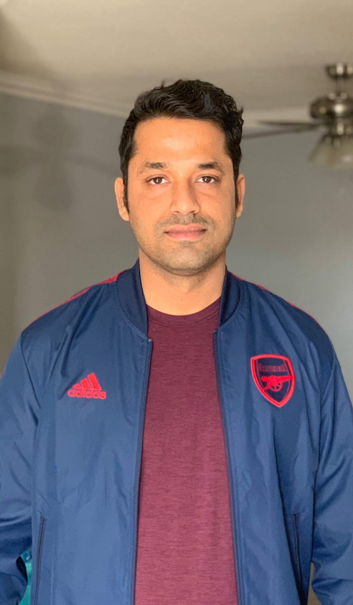

Rahul Gupta

Summary
I am Senior Software Engineer working mainly on c#, .NET, Angular, SQL
Education
- Masters in Computer Science, Bowling Green State University, 2017
- Bachelors in Computer Science, Patan Multiple Campus, 2012
Work Experience
- Allied Pilots Inc
August 2023- Current
- worked on the Crew and Pilots Notification system
- notification system implmeneted in .NET8, Azure service bus, c#, sql server
- Careington International Corp
Jan 2023- July 2023
- worked on Healthcare applications
- Tech Stack: c#, Angular, .NET
- Amrock Inc
Nov 2020- Dec 2022
- worked on Nova Tax applications
- Tech Stack: c#, Angular, .NET, Domain Driven Design, SQL
- Amark Precious Metals
Dec 2018- Nov 2020
- worked on Logisics applications
- Tech Stack: c#, .NET, MVC
- Careington International Corporation
August 2017 - Dec 2018
- worked on Healthcare applications
- Tech Stack: c#, Angular, .NET, Domain Driven Design, SQL
- Bowling Green State University
Jan 2016 - May 2017
- Worked as Graduate Teaching Assistant
- TA and office hour for Data Structure Algorithm, c++ object oriented Programming, Operating System
Skills
- c#
- .NET
- Azure Cloud
- Angular/React
- SQL
- CICD
- Docker/Kubernetes